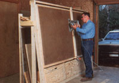
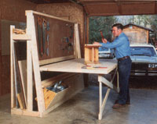

Cutting Table Illustration
Here's a real space-saving workbench that solves a number of problems with one design.
Unless you're fortunate enough to have a roomy, permanent workshop, you probably have to satisfy yourself with a corner of the garage or basement when it's time to tinker. And there's nothing wrong with that. But if you find yourself cramped for work space on a more than occasional basis, the maneuvers required in setting up shop for each project-then clearing everything away when the task's complete-can get to be downright irksome.
That's why, when the problem of the crowded workshop nagged at our staffers just once too often, a few of them put their heads together to design the space-saving multipurpose workstation you see here. The project started, simply enough, as a nifty little plywood-cutting jig designed and submitted to us by reader Scott Brophy of Wisconsin. His circular-saw cutting guide caught the attention of our technical editors, so we incorporated a simplified version of that feature into our model, then added an easel (which swings out to become a workbench), two tool storage bins, a large pegboard, and a set of lumber racks for strips and full-size sheets.
The best part is that the whole affair is only 2 feet deep when closed . . . yet its 8-3/4-foot length permits entire sheets of paneling or plywood to lie flat on the worktable whether it's in the upright or the horizontal position. What's more, the clamp-on cutting fence provides a sturdy guide when you're sawing and can be situated just about any way it's needed, though you may prefer to limit your cutting activity to the center few inches of the table to preserve the working surface on either side. (As an alternative, you can place spacer strips under the work and carefully set the blade depth to avoid gouging the wood.)
Finally, the folded-up table has enough clearance behind it to allow the pegboard to easily accommodate all sorts of hand tools . . . while the larger power tools can be stored in the swing-open bins below. Wood stock-from trim molding to entire panels-fits safely and unobtrusively in the almost foot-wide racks at the back.
Our shop staffers took special care to make sure this project could be duplicated by folks who have few tools. Though access to a table saw would ease the burden of making some of the angled joints, no cut is beyond the capacity of a circular saw, a coping blade, or-in a pinch-a hole saw fixed to an electric drill. Simple butt joints are used almost exclusively, and the framing members are fastened together with nails and glue, rather than screws.
You'll notice that the worktable swings out from the frame on a sliding dowel hinge pin that rides in slots cut into two guide boards. Since a 3/4" sheet of plywood packs some weight, we devised a booster made from elastic shock cords to help pull the load upward when the table's being closed. This tensioner, rope, and pulley system is completely contained at the frame's inner edges and doesn't interfere with tools or the use of the table in either position.
To some do-it-yourselfers, the bottom line is a project's total cost . . . and at just about $100 worth of new materials, this one may be a tad steep. But to other folks-particularly those industrious tinkerers who'll gladly swap dollars for square feet of usable work area-our homebuilt hybrid might be a dream come true.
Click here for a downloadable construction illustration.
|
 Closed cutting table. |
 Open cutting table. |
|